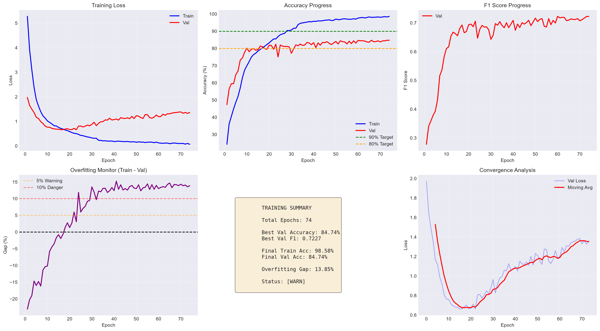
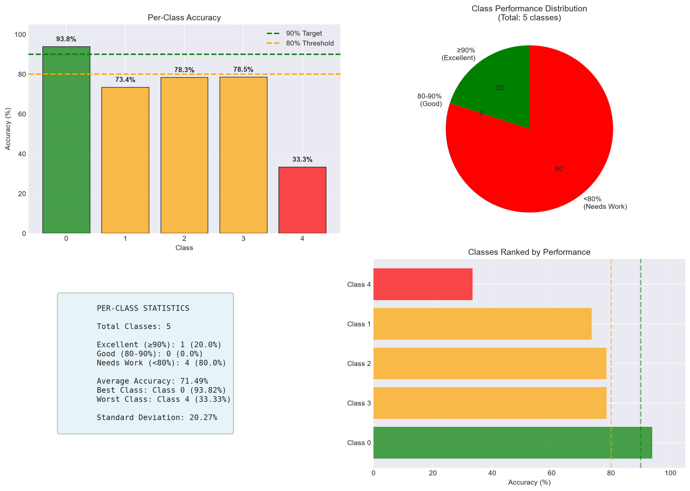
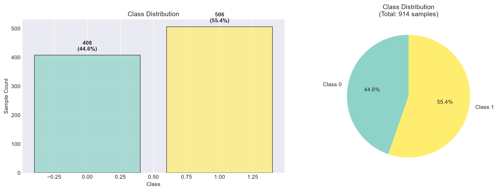

| Property | Value |
|---|---|
| Model Path | experiments\Exp1_SmoothedInvFreq\best_model.pth |
| Training Epoch | 74 |
| Class | Accuracy | Status |
|---|---|---|
| Class 0 | 93.82% | [OK] |
| Class 1 | 73.42% | [WARN] |
| Class 2 | 78.33% | [WARN] |
| Class 3 | 78.52% | [WARN] |
| Class 4 | 33.33% | [FAIL] |



| Property | Value |
|---|---|
| Total Samples | 914 |
| Number of Classes | 2 |
This report was automatically generated by the Model Report Generator.
For questions or issues, please refer to the documentation.